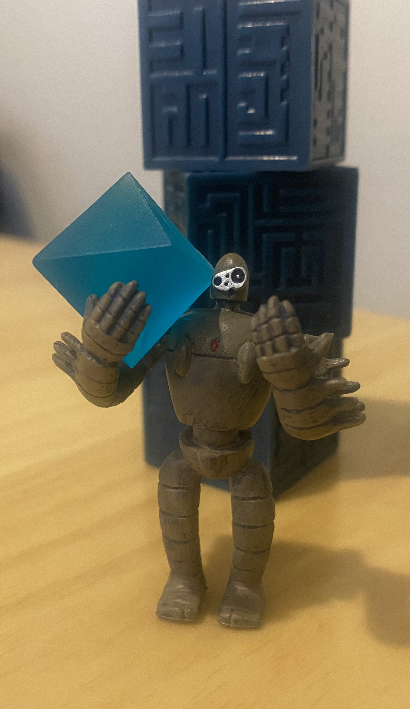

Meet Tol, a nature-loving warforged cleric in a future dystopian hellscape

Inspiration
In this campaign I will be playing a character named Tol Scrapheap. His creation was inspired by the Laputas from the movie Castle in the Sky. In fact, the character miniature you see on the left is actually official merchandise I purchased from Amazon. The miniature is 5 cm tall which is a little big for a Dungeons and Dragons miniature, but his name is literally a play on the word tall, so I feel that it is okay.
Race: Warforged
As this campaign takes place in a futuristic cyberpunk universe, I figured a warforged character was appropriate. They are essentially a sentient robot race, originally created to be perfect solders in a war before they gained sentience. Typically warforged are seeking to find their purpose, and they tend to default to neutral and good alignments, although they can adopt the ideals and alignments of their creators.
Classes: Cleric
I thought it would be interesting to play my warforged character as a cleric. I like the idea of playing a mostly peaceful
Subclasses & Multiclass
Backstory
One dark and stormy night, in the Shadowrun scrapheap, an old gnome artificer by the name of Bonita Ironkind was scavenging for parts. Bonita, commonly and affectionately called Smol by those who knew her well and also due to her stature, was about to head home with her slim pickings when suddenly she spotted a very long iron arm sticking out from amongst the junk. Excitedly she ran over to excavate, thinking it would be someone's old prosthetic, which she could melt down or repurpose. Working diligently, she soon learned that the arm was still attached to something massive (by gnome standards). After a few hours of hard labour she unearthed the head, torso and two arms of a seemingly lifeless warforged. She spent the last few hours before dawn tinkering away in an attempt to reanimate the warforged. Just as she was about to cut her losses, a terrible creak of rusted worn out metal on metal sound echoed through the scrapheap, and the warfarged unsteadily stood up.
"Right now, you're a proper mess to look at you. Let's get you home and I'll fix you up better than new!" Smol said, taking the warforged massive metal hand with her own tiny gnomish one. People call me Smol, and you can too. I think I'll call you Tol, if you don't mind."